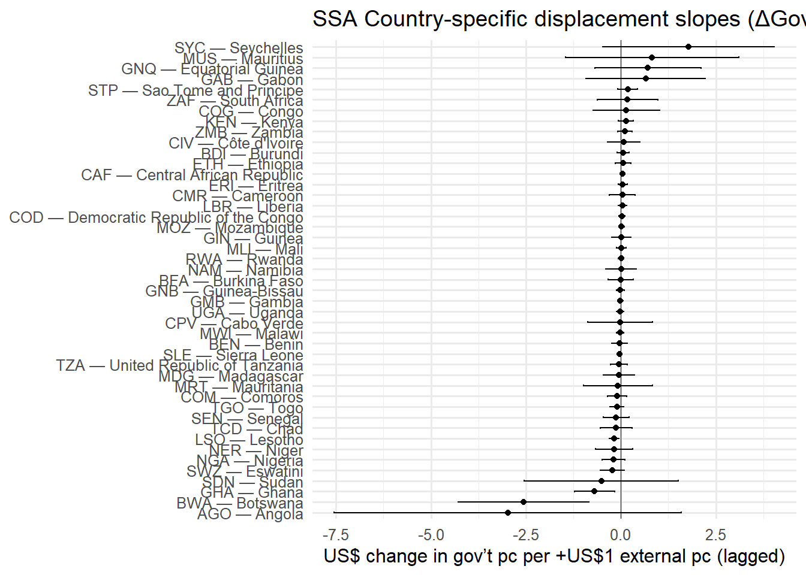

# ================================
# Displacement Effect by Country
# Years: 2000–2022
# Region: Sub-Saharan Africa (SSA)
# Data: GHED_small.xlsx (Sheet1)
# ================================
# --- Packages ---
library(readxl)Warning: package 'readxl' was built under R version 4.4.3library(tidyverse)── Attaching core tidyverse packages ──────────────────────── tidyverse 2.0.0 ──
✔ dplyr 1.1.4 ✔ readr 2.1.5
✔ forcats 1.0.0 ✔ stringr 1.5.1
✔ ggplot2 3.5.1 ✔ tibble 3.2.1
✔ lubridate 1.9.3 ✔ tidyr 1.3.1
✔ purrr 1.0.2
── Conflicts ────────────────────────────────────────── tidyverse_conflicts() ──
✖ dplyr::filter() masks stats::filter()
✖ dplyr::lag() masks stats::lag()
ℹ Use the conflicted package (<http://conflicted.r-lib.org/>) to force all conflicts to become errorslibrary(broom)
library(purrr)
library(scales)
Attaching package: 'scales'
The following object is masked from 'package:purrr':
discard
The following object is masked from 'package:readr':
col_factorlibrary(countrycode) # to classify SSA countriesWarning: package 'countrycode' was built under R version 4.4.3# --- Settings ---
path_xlsx <- "./output/GHED_small.xlsx" # adjust path if needed
sheet_nm <- "Sheet1"
yr_min <- 2000
yr_max <- 2022
# --- 1) Load data ---
raw <- read_excel(path_xlsx, sheet = sheet_nm)
df <- raw %>%
transmute(
code = .data$code,
location = .data$location,
year = suppressWarnings(as.integer(.data$year)),
gghed_pc = suppressWarnings(as.numeric(.data$gghed_pc_usd)),
ext_pc = suppressWarnings(as.numeric(.data$ext_pc_usd))
) %>%
filter(!is.na(code), !is.na(year)) %>%
filter(year >= yr_min, year <= yr_max) %>%
arrange(code, year)
# --- 2) Keep only Sub-Saharan African countries ---
# Use 'countrycode' to map ISO3 to region
df <- df %>%
mutate(region = countrycode(code, origin = "iso3c", destination = "region")) %>%
filter(region == "Sub-Saharan Africa")
# --- 3) Keep only countries with full coverage 2000–2022 ---
years_needed <- yr_max - yr_min + 1
keep_codes <- df %>%
group_by(code) %>%
summarise(n_years = n_distinct(year), .groups = "drop") %>%
filter(n_years == years_needed) %>%
pull(code)
df <- df %>% filter(code %in% keep_codes)
# --- 4) Build panel with ΔGov and lag(External) ---
panel <- df %>%
group_by(code) %>%
mutate(
d_gov_pc = gghed_pc - lag(gghed_pc),
ext_pc_lag = lag(ext_pc)
) %>%
ungroup()
usable <- panel %>% filter(!is.na(d_gov_pc), !is.na(ext_pc_lag))
# --- 5) Run country-by-country regressions ---
fit_one <- function(dat) {
m <- lm(d_gov_pc ~ ext_pc_lag, data = dat)
broom::tidy(m, conf.int = TRUE) %>% filter(term == "ext_pc_lag") %>%
mutate(n_obs = nrow(dat))
}
results_by_ctry <- usable %>%
group_by(code, location) %>%
group_modify(~ fit_one(.x)) %>%
ungroup() %>%
arrange(estimate)
print(results_by_ctry)# A tibble: 45 × 10
code location term estimate std.error statistic p.value conf.low conf.high
<chr> <chr> <chr> <dbl> <dbl> <dbl> <dbl> <dbl> <dbl>
1 AGO Angola ext_p… -2.97 2.19 -1.36 0.190 -7.54 1.60
2 BWA Botswana ext_p… -2.57 0.824 -3.12 0.00545 -4.28 -0.848
3 GHA Ghana ext_p… -0.693 0.251 -2.76 0.0120 -1.22 -0.170
4 SDN Sudan ext_p… -0.513 0.961 -0.534 0.600 -2.54 1.51
5 SWZ Eswatini ext_p… -0.227 0.150 -1.52 0.145 -0.539 0.0853
6 NGA Nigeria ext_p… -0.191 0.144 -1.33 0.200 -0.492 0.110
7 NER Niger ext_p… -0.180 0.236 -0.763 0.454 -0.673 0.313
8 LSO Lesotho ext_p… -0.172 0.0610 -2.83 0.0104 -0.300 -0.0452
9 TCD Chad ext_p… -0.127 0.199 -0.638 0.531 -0.543 0.289
10 SEN Senegal ext_p… -0.124 0.164 -0.757 0.458 -0.466 0.218
# ℹ 35 more rows
# ℹ 1 more variable: n_obs <int># --- 6) Save results ---
write.csv(results_by_ctry, "displacement_by_country_SSA_2000_2022.csv", row.names = FALSE)
# --- 7) Visualization: Dot-whisker plot ---
p_coef <- results_by_ctry %>%
mutate(label = paste0(code, " — ", location)) %>%
ggplot(aes(x = estimate, y = reorder(label, estimate))) +
geom_vline(xintercept = 0, linewidth = 0.3) +
geom_point() +
geom_errorbarh(aes(xmin = conf.low, xmax = conf.high), height = 0.15) +
labs(
title = "SSA Country-specific displacement slopes (ΔGov ~ lag(External))",
x = "US$ change in gov’t pc per +US$1 external pc (lagged)",
y = NULL
) +
theme_minimal(base_size = 12)
print(p_coef)
# --- 8) How to interpret (for your notes)
# - If Beta < 0 and p-value < 0.05: evidence of displacement for that country and period.
# - If Beta ~ 0 or CI spans 0: no clear evidence (could be displacement or crowding-in not detectable).
# - Always check n_obs (the # of usable year-to-year changes): small n makes inference noisy.